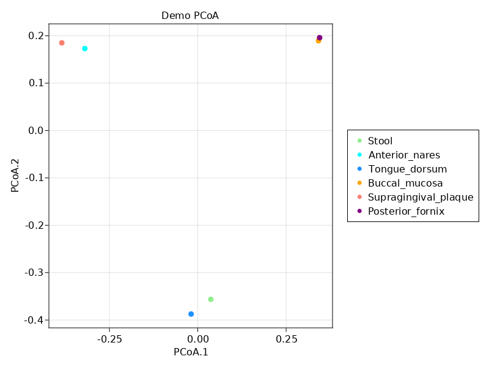
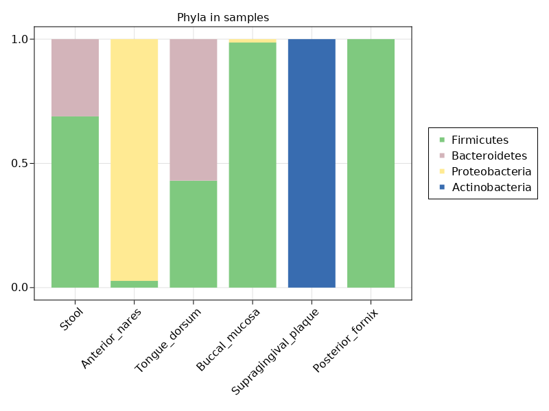

MetaPhlAn Tutorial with BiobakeryUtils.jl
- 🗒️ This tutorial mirrors the official MetaPhlAn tutorial
- ❓️ If you have questions about MetaPhlAn itself, please direct them to the bioBakery help forum
- 🤔 If you have questions about using the MetaPhlAn tools in julia, please open an issue, or start a discussion over on
Microbiome.jl! - 📔 For a function / type reference, jump to the bottom
This tutorial assumes:
- You have activated a julia Project that has
BiobakeryUtils.jlinstalled - The
metaphlanpython package is installed and accessible from yourPATH(see the bioBakery installation guide)
Loading MetaPhlAn output
You can load a MetaPhlAn profile using metaphlan_profile:
julia> mp = metaphlan_profile("SRS014476-Supragingival_plaque_profile.tsv"; sample="SRS014476")
CommunityProfile{Float64, Taxon, MicrobiomeSample} with 11 features in 1 samples
Feature names:
Bacteria, Actinobacteria, Actinobacteria...Corynebacterium_matruchotii, Rothia_dentocariosa
Sample names:
SRS014476This generates a CommunityProfile type from Microbiome.jl, which is a matrix-like object with MicrobiomeSamples as column headers, and Taxons as row headers.
The samples can be accessed with samples or samplenames:
julia> samples(mp)
1-element Vector{MicrobiomeSample}:
MicrobiomeSample("SRS014476", {})
julia> samplenames(mp)
1-element Vector{String}:
"SRS014476"Notice that in addition to the sample name ("SRS014476"), there's an additional field - that's a metadata dictionary that we can add values to.
julia> plaque = first(samples(mp))
MicrobiomeSample("SRS014476", {})
julia> set!(plaque, :STSite, "Supragingival Plaque")
MicrobiomeSample("SRS014476", {:STSite = "Supragingival Plaque"})The taxa (Microbiome.jl uses the generic term "features") can be accessed with features or featurenames:
julia> features(mp)
11-element Vector{Taxon}:
Taxon("Bacteria", :kingdom)
Taxon("Actinobacteria", :phylum)
Taxon("Actinobacteria", :class)
Taxon("Corynebacteriales", :order)
Taxon("Micrococcales", :order)
Taxon("Corynebacteriales", :order)
Taxon("Micrococcales", :order)
Taxon("Corynebacteriaceae", :family)
Taxon("Micrococcaceae", :family)
Taxon("Corynebacterium", :genus)
Taxon("Rothia", :genus)
Taxon("Corynebacterium_matruchotii", :species)
Taxon("Rothia_dentocariosa", :species)Merging profiles
To merge profiles from multiple samples, you can load each individual profile as a CommunityProfile and merge them with commjoin:
julia> mps2 = commjoin([metaphlan_profile(p) for p in profiles]...)
CommunityProfile{Float64, Taxon, MicrobiomeSample} with 62 features in 6 samples
Feature names:
Bacteria, Firmicutes, Bacteroidetes...Lactobacillus_crispatus, Lactobacillus_iners
Sample names:
SRS014459-Stool_profile, SRS014464-Anterior_nares_profile, SRS014470-Tongue_dorsum_profile...SRS014476-Supragingival_plaque_profile
, SRS014494-Posterior_fornix_profileYou can also load a pre-merged table (eg from merge_metaphlan_tables.py) using metaphlan_profiles:
julia> mps = metaphlan_profiles("merged_abundance_table.tsv"; samplestart=3)
CommunityProfile{Float64, Taxon, MicrobiomeSample} with 62 features in 6 samples
Feature names:
Bacteria, Actinobacteria, Actinobacteria...Moraxella, Moraxella_nonliquefaciens
Sample names:
SRS014494-Posterior_fornix, SRS014476-Supragingival_plaque, SRS014472-Buccal_mucosa...SRS014464-Anterior_nares, SRS014459-StoolNote: the samplestart=3 argument is necessary when the second column contains NCBI taxonomy IDs.
One benefit of building the merged table in julia is that as we're loading the tables, we can attach metadata to them. For example:
julia> my_profiles = [] # an empty vector
Any[]
julia> for p in profiles
file_wo_ext = first(splitext(p))
(srs, site) = split(file_wo_ext, '-')
site = replace(site, "_profile"=> "")
sample = MicrobiomeSample(srs)
set!(sample, :STSite, site)
set!(sample, :filename, p)
push!(my_profiles, metaphlan_profile(p; sample))
end
julia> mps3 = commjoin(my_profiles...)
CommunityProfile{Float64, Taxon, MicrobiomeSample} with 62 features in 6 samples
Feature names:
Bacteria, Firmicutes, Bacteroidetes...Lactobacillus_crispatus, Lactobacillus_iners
Sample names:
SRS014459, SRS014464, SRS014470...SRS014476, SRS014494
julia> get(mps3)
6-element Vector{NamedTuple{(:sample, :STSite, :filename), Tuple{String, String, String}}}:
(sample = "SRS014459", STSite = "Stool", filename = "SRS014459-Stool_profile.tsv")
(sample = "SRS014464", STSite = "Anterior_nares", filename = "SRS014464-Anterior_nares_profile.tsv")
(sample = "SRS014470", STSite = "Tongue_dorsum", filename = "SRS014470-Tongue_dorsum_profile.tsv")
(sample = "SRS014472", STSite = "Buccal_mucosa", filename = "SRS014472-Buccal_mucosa_profile.tsv")
(sample = "SRS014476", STSite = "Supragingival_plaque", filename = "SRS014476-Supragingival_plaque_profile.tsv")
(sample = "SRS014494", STSite = "Posterior_fornix", filename = "SRS014494-Posterior_fornix_profile.tsv")See Microbiome.jl docs for more info on metadata and CommunityProfiles)
Analyze Results
With the profile loaded, you can use many julia packages to analyze or visualize the results. Inside the CommunityProfile is a sparse matrix, which you can access with abundances. This means that all of julia's powerful statistics and ML libraries are easy to use with your microbiome data.
For more information about indexing and accessing components of the data, see the Microbiome.jl docs
Performing PCoA analysis
To demonstrate this, we'll use a couple of other julia packages to perform and plot a principal coordinates analysis (PCoA)[note]: Distances.jl and MulitvariateStats.jl.
(Actually some convenient functions for this are re-exported from Microbiome.jl eg braycurtis and pcoa – this is just meant to show how easy it is to use the underlying data for whatever you like)
julia> using MultivariateStats, Distances
julia> dm = pairwise(BrayCurtis(), abundances(mps3), dims=2)
6×6 Matrix{Float64}:
0.0 0.853268 0.662373 0.758712 0.857143 0.758712
0.853268 0.0 0.845517 0.841645 0.857143 0.845517
0.662373 0.845517 0.0 0.77874 0.857143 0.787196
0.758712 0.841645 0.77874 0.0 0.857143 0.461648
0.857143 0.857143 0.857143 0.857143 0.0 0.857143
0.758712 0.845517 0.787196 0.461648 0.857143 0.0
julia> pc = fit(MDS, dm, distances=true)
Classical MDS(indim = NaN, outdim = 5)For plotting, I use Makie, but there are many other options.
julia> using CairoMakie
julia> sites = [m.STSite for m in get(mps3)]
6-element Vector{String}:
"Stool"
"Anterior_nares"
"Tongue_dorsum"
"Buccal_mucosa"
"Supragingival_plaque"
"Posterior_fornix"
julia> clrs = [:lightgreen, :cyan, :dodgerblue, :orange, :salmon, :purple]
julia> loads = sqrt.(pc.λ)' .* projection(pc)
julia> fig, ax, plt = scatter(loads[:,1], loads[:, 2], color=clrs,
axis=(
xlabel="PCoA.1",
ylabel="PCoA.2",
title="Demo PCoA"
))
julia> leg = Legend(fig[1,2], [MarkerElement(color = c, marker=:circle) for c in clrs], sites)
julia> fig
Stacked bar
One more example - let's plot the proportion of different phyla in each sample. First, we'll filter the table to keep only rows that contain phyla. The filter acts on a CommunityProfile by applying the predicate to the features of the profile.
julia> phyl = filter(t-> taxrank(t) == :phylum, mps3)
CommunityProfile{Float64, Taxon, MicrobiomeSample} with 4 features in 6 samples
Feature names:
Firmicutes, Bacteroidetes, Proteobacteria, Actinobacteria
Sample names:
SRS014459, SRS014464, SRS014470...SRS014476, SRS014494julia> phylumnames = featurenames(phyl)
4-element Vector{String}:
"Firmicutes"
"Bacteroidetes"
"Proteobacteria"
"Actinobacteria"
julia> fig2 = Figure()
julia> ax2 = Axis(fig2[1,1], title="Phyla in samples", xticks=(1:nsamples(phyl), sites));
julia> ax2.xticklabelrotation = π / 4
0.7853981633974483
julia> y = Float64[]
julia> for sample in samples(phyl)
abs = abundances(phyl[:, sample])
abs = abs ./ sum(abs)
append!(y, abs)
end
julia> x = repeat(1:nsamples(phyl), inner=nfeatures(phyl))
julia> sitenums = repeat(1:nfeatures(phyl), outer=nsamples(phyl))
julia> barplot!(ax2, x, y, stack=sitenums,
color=sitenums, colormap=:Accent_5)
julia> leg = Legend(fig2[1,2], [MarkerElement(color = c, marker=:rect) for c in to_colormap(:Accent_5, 4)], phylumnames)
julia> fig2
Compressed inputs and multiple files
Both single-profile and merged-table readers accept plain, gzip (.gz), and XZ (.xz) paths. A collection of single-sample paths is loaded directly into one profile, sharing a feature map during that load:
paths = ["sample1.tsv.xz", "sample2.tsv.gz"]
profile = metaphlan_profiles(paths, :species; samples=["sample1", "sample2"])Sample columns follow path order; feature rows follow first occurrence. Existing sample objects may be supplied to preserve metadata. No persistent cache is needed. Single-sample named headers locate relative_abundance even when coverage and read counts are present. Existing Microbiome rank/SGB representations remain in use.
For raw strings and values without constructing Taxon objects or profiles, use read_metaphlan(path) or read_metaphlan(io) on an already decompressed stream. The result is a Tables-compatible (feature=..., abundance=...) column table; features retain their full original clade strings. Supplied streams remain open.
BiobakeryUtils.read_metaphlan — Function
read_metaphlan(path::AbstractString)
read_metaphlan(io::IO)Read a single-sample MetaPhlAn table into a Tables-compatible column table with feature (full clade strings) and abundance columns. Named headers select relative_abundance, including tables with extra coverage/read-count columns. Legacy two-column tables are supported. Paths may be plain, gzip, or XZ; supplied IO must already be decompressed and remains open. No Microbiome features are built.
Functions and Types
BiobakeryUtils.metaphlan_profile — Function
metaphlan_profile(path::AbstractString, rank::Union{Int, Symbol}=:all; sample)Creates a CommunityProfile from a MetaPhlAn output file. Can select data according to taxonomic rank. If rank not given, all data is used. sample may be a name or an existing sample object with metadata. The default name is the filename without table/compression suffixes. Plain, gzip, and XZ paths are supported. Named headers select relative abundance independently of extra columns.
Levels may be given either as numbers or symbols:
1=:kingdom2=:phylum3=:class4=:order5=:family6=:genus7=:species8=:subspecies
BiobakeryUtils.metaphlan_profiles — Function
metaphlan_profiles(path::AbstractString, rank::Union{Int, Symbol}=:all; keepunidentified=false)Reads in MetaPhlAn profiles from a merged table into a CommunityProfile. Can select data according to taxonomic rank. If rank not given, all data is used. Set keepunidentified flag to true to keep UNIDENTIFIED data.
Levels may be given either as numbers or symbols:
1=:kingdom2=:phylum3=:class4=:order5=:family6=:genus7=:species8=:subspecies
BiobakeryUtils.metaphlan_profiles — Function
metaphlan_profiles(paths::AbstractVector{<:AbstractString}, rank::Union{Int, Symbol}=:all)Combines MetaPhlAn profiles from multiple single tables into a CommunityProfile. Samples follow path order, and features follow first occurrence. samples may supply names or sample objects. Plain, gzip, and XZ files may be mixed. A shared in-memory feature map builds one Float64 profile without intermediate profiles or a persistent index. Missing-rank features remain included when filtering rank.
BiobakeryUtils.parsetaxa — Method
parsetaxa(taxstring::AbstractString; throw_error=true)Given a string representing taxonmic ranks as formatted by MetaPhlAn (eg "kBacteria|pProteobacteria..."), separates taxonomic ranks into elements of type Taxon in a vector.
BiobakeryUtils.parsetaxon — Method
parsetaxon(taxstring::AbstractString, rank::Union{Int, Symbol})Finds given taxonomic rank in a string (as formatted by MetaPhlAn (eg "kBacteria|pProteobacteria...")) and returns the name and taxonomic rank as a Taxon. If taxon rank not given, function will return the most specific (lowest) taxonomic rank available.
Levels may be given either as numbers or symbols:
1=:kingdom2=:phylum3=:class4=:order5=:family6=:genus7=:species8=:subspecies
- noteRight now, the table contains all taxonomic levels, so the PCoA doesn't make much sense. For a real analysis, you'd probably want to restrict to a single rank (eg species):
spec = filter(t-> taxrank(t) == :species, mps3).